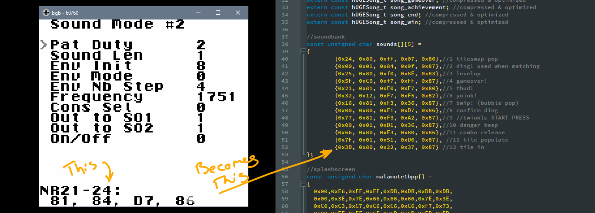
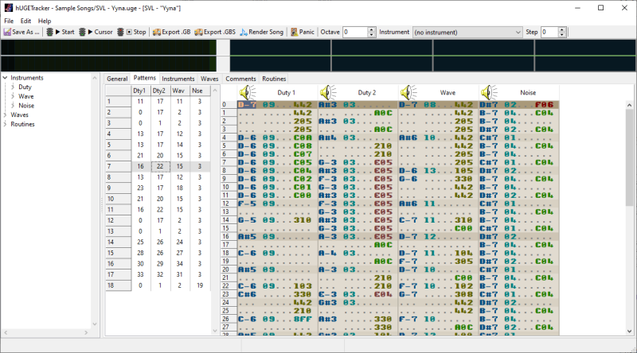

malamute
NEWSLETTER - AUGUST 2024
making music & sound for gameboy
For its day, the Game Boy's sound hardware was pretty typical but by today's standards it would feel very limited. The GB only has four sound channels: it can only play four different sounds at once. We can describe these as two 'square' cannels', a 'pulse' channel' and a 'noise' channel. I'll explain what this means and why it affected the development of music and sound in Patchy Matchy/Fydo's magic tiles.
So normally when you encounter digital audio these days its stored as a waveform. Maybe you've heard of .wav files, the file type stands for "waveform". MP3 is just a compressed way of storing a waveform. Waveforms are basically just pulses of sounds at different frequences. We can 'modulate' these frequencies during playback to get the desired sound waves out the other end. This is why waveform data is sometimes called 'PCM' data, or "PULSE CONTROL/CODE/CURVE MODULATION".
The GB does have a 'pulse' channel for this kinds of playback and even supports playing pre-processed sound directly off the cartridge (and people have made their Game Boys to play pre-recorded music, like this, this, or this old demo) but the sheer size of most waveform data mostly prohibits us from using it in games on the GB. When an MP3 is 1 MB per minute and you have 32KB in total, you have to think about sound processing a little differently. For practicality, we need to think of our music as a sequence of playable sounds instead of as waveform, and then limit ourselves to the four-at-a-time structure the GB provides.
We could call the 4 channels as follows: 1 or Square 1; 2 or Square 2; 3 or WAV or Pulse or PCM; 4 or Noise. The GB's 'square' or 'duty' channels, basically just buzz on or off at a certain frequency. They are called 'square' waves because of the sharp corners in the waveform like this:┌┐┌┐┌┐┌┐. Every high would be an 'on' and every low would be an 'off'. Doing this gets you a little buzz. Do it at the right frequency to get buzzes as seris of notes. On top of this, you can apply a few simple effects, like a sort of volume fade or manipulating the sequence of highs to get something like a portamento or a slide. Square channel 1, supports more effects than square channel 2. This will be important later. The square channels are well suited for lead and bass notes.
The wave/pulse channel is well suited for lower frequences but also for any general tones, with the caveat that the effects it can apply are very limited compared to the square channels. This is because instead of loading in a whole sound effect, you can load in a very short profile of a waveform. This lets us get some tones that range from very low and mellow to very high and bright.
The last channel is the noise channel, and because the tone it produces is literally random noise within a small range (again, you can apply some limited effects), it usually ends up being used for percussion like raspy snares or a shimmering hi-hats or cymbals.
Without getting more technical about it, to tell the Game Boy to play some music, we just need to load in a sequence of bytes that tells the sound hardware which sounds to play as we roll through the song. You might say, "But, wait! What about sound effects? There isn't just music playing, there are also the boops and bwops from the gameplay!" and you'd be totally right. Because the Game Boy gives us 4 channels and FMT/PM has a lot of sound effects playing a lot of the time, I kept one channel free (Square 1) for sound effects, and only used the other three channels for playing music. Some people side-step this problem by having the sound effects interrupt the music (disable a sound channel, play the SFX on that channel, and then kick the sound channel back in to sequence to play the music). Personally, I don't like the effect of part of the soundtrack cutting in and out, so I opted for 3 channels for background music, 1 channel for sound effects.
tools
Again, we haven't got a lot of space to deal with here. We have to be efficient about how we are using our data, so we're looking for ways to express a lot of information with not a lot of data. To make sound effects, I used the GB sound test ROM which came with GBDK. You can fiddle with byte values on the different sound channels, the program will play the sound, and then you can store those values and dial them in again later in your own game to make the same sound effect. Then, all I have to do is just make sure the bytes get sent to the sound hardware when you do the thing that triggers the sound.
For music, I use a program called hUGETracker. The tracker lets me arrange the sound as a series of repeating patterns. It lets me set the tones for the waveform, the settings for the duty channel, and repeat different patterns to use less storage. Then hUGEDriver, a small package that I include in my game code, plays the music back.
I'm really grateful to Superdisk, the author of hUGETracker and its in-game-engine hUGEDriver, for his support. I reached out to him asking if certain things were possible with his software, and he went above and beyond and built into it a couple special features like efficient compression and start-and-stop fuctionality. In Fydo's Magic Tiles, I was forced to leave in a bug where the background music would reset when it was interrupted by an achievement, which I managed to squash with his help for release in Patchy Matchy.
As for writing the music, that was done in collaboration with my good friend Max Chappell. Max and I went to animation school together, and we worked together at both Guru Studio and at Sony Imageworks. He is very musically talented and when I approached him about writing music for the game, he was excited. We collaborated on a couple tracks, which he then composed at home. I took his music and arranged it in hUGETracker to the best effect I could while reducing it down to three instruments. While arranging the music I had to move some things around and change the feel of some pieces, so the transfer was not 1-to-1 but we were both happy with the result. In the end HAPPY, TENSE, and FUNKY made it into the game, with TENSE being most people's favorite.
Here was Max's original TENSE composition...
And here is what it sounds like once it was sequenced for the Game Boy...
If you'd like to hear the complete soundtrack, including a couple of extended tracks and unreleased tracks, you can download the Fydo's Magic Tiles ROM from itch.io and get the FLAC and MP3 soundtrack as a bonus. And as a reminder, you can pre-order a cartridge of Patchy Matchy from ModRetro, as a launch title for their new console, the Chromatic. The cartridge is also fully Game Boy compatible. You can also get it as part of their launch bundle. It ships out in December!
from the gb dev scene
This year I'm supporting and sponsoring a prize in the GBA Jam a game jam for Game Boy Advance development. Its hosted by The GBAdev.net community. The submissions closed on August 18th and the entries look pretty cool! Definetly check them out! I'll do a quick once-over of my favorites next month. Jams like this are a great way to open up a niche development community and expand the knowledge base. I've totally considered making GBA games (Goodboy Galaxy was an amazing inspiration), and looking forward to trying it out in the future!

just interesting
cool tweets
bookmarked in august
The last knight
— ＡｂｕｅｌｏＲｅｔｒｏＷａｖｅ (@AbueloRetroWave) July 25, 2024
~𝘢𝘳𝘸 pic.twitter.com/TnVShExIHt
I KNOW THIS PRETTY RAVE GIRL ALWAYS THINK ABOUT HER AND WHEN SHE SAYS HI TO ME BUTTERFLIES GO RIGHT THRU ME pic.twitter.com/rO87eKZxQR
— Lux (@thisislux) August 6, 2024
China O'Brien (1990) dir. Robert Clouse#CynthiaRothrock pic.twitter.com/XaLQ3sZcXA
— Martin Kessler (@MovieKessler) August 1, 2024
Added some path tiles pic.twitter.com/VFwd7tnYT1
— Pita (@pita_akm) August 18, 2024
How it started vs. How it's going#gbstudio #gameboy pic.twitter.com/6XBHkoj9qk
— Niels de Rijk (@nderijk) August 16, 2024
32×32ポケモンドット絵にて
— もぺ⬛︎ドット絵 skeb募集中 (@mope_dotpict) August 18, 2024
ゴース→ゴースト→ゲンガーの進化系が揃いました！#pixelart #ドット絵 pic.twitter.com/Pbs09ldKJO
BLÅHAJ MY BELOVED💙
— Dinchen (@dinchenix) September 2, 2024
• #pixelart • #ドット絵 • #픽셀아트 • pic.twitter.com/FY0LnVOrlD
games by friends
FEATURED! HIGHLY RECOMMENDED! SO MUCH FUN!
EARLY ACCESS! Purchasing the game early helps developers as they finish the game.
Drattzy Games, devs of Alterium Shift, were at PAX and had some cool developments! Read more here.
WISHLIST! Wishlisting costs nothing and helps developers by boosting their lauch visibility, so check out these titles!
If you'd like your game featured here, get in touch!
anything to contribute?
Thanks for reading! Reach out or tag me on social media to @ohnotomsutton or reply to your newsletter email to let me know what you think or to suggest content. I'd love to get more game dev, art, and animation stuff! The goal is to have an assembly of fun, interesting or enlightening things for the first of the month, every month.
Subscribers as of 02/09/2024: 27.